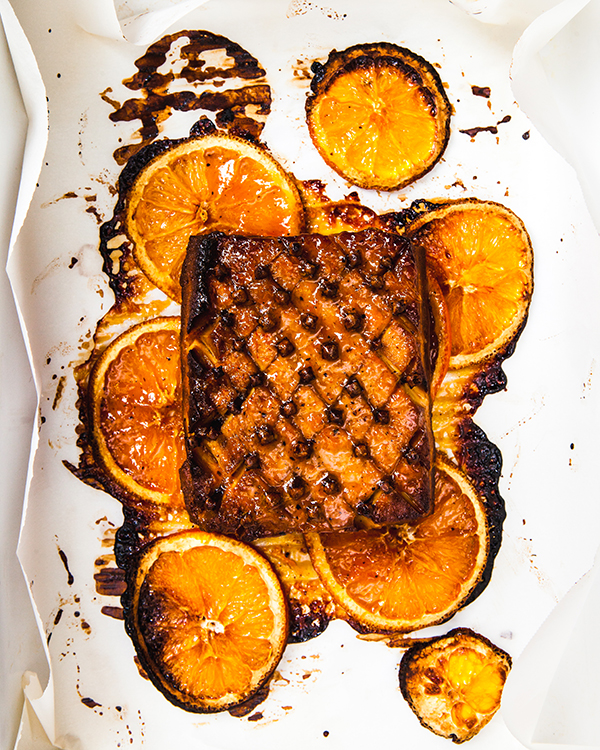

Odin Recipes
Sweet & Smoky Glazed Tofu Ham

Description
Have you gone mad? Don't put an adorable pig at the center of your table! Put an adorable block of tofu instead!
This is a sassy take on ham that will definitely bring smiles (or at least curious side glances) to your guests' faces
It's also, as the title suggests, sweet and smoky and elegant in a '70s kind of way, with notes of orange and maple. It's easy to double the recipe, or even triple, if this will be your main course.
Ingredients
For the marinade
- 1/4 cup olive oil
- 1/4 cup soy sauce
- 1/4 maple syrup or agave syrup
- 2 tbsp liquid smoke
- 1/4 brown sugar
- 2 tsp garlic powder
- 2 tsp onion powder
- 1 tsp smoked paprika
For the tofu
- 400 g tofu
- 8 thin orange slices
- 20-25 whole cloves
For the glaze
- 1/2 cup fresh orange juice
- 2 tbsp apricot jam
- 1 tbsp whiskey
- 2 tbsp brown sugar
- 1/4 tsp ginger powder
- 1/4 tsp smoked salt
- 1/4 tsp black pepper
Instructions step by step
- MAKE THE TOFU: In a shallow dish, whisk together all the marinade ingredients. Place the block of tofu in the marinade, turn to coat, and marinate in the refrigerator for at least 4 hours, and up to overnight.
- Preheat the oven to 375°F. Line a 9-by-13-inch baking pan with parchment paper.
- Arrange the orange slices in an even layer in the center of the parchment. Place the marinated tofu block on the bed of oranges.
- Carefully score the top of the tofu block with a sharp knife in a diamond pattern, about 1⁄4 inch deep. Press the whole cloves into the intersections of the cuts (at the corners of the diamonds). Bake for 1 hour.
- IN THE MEANTIME, MAKE THE GLAZE: Combine all the glaze ingredients in a small saucepot and bring to a boil over medium-high heat. Reduce the heat to low and simmer until reduced by half and thickened, about 20 minutes. Remove from the heat and set aside.
- After the tofu has baked for 1 hour, remove it from the oven and pour the glaze evenly all over the top. Bake for an additional 30 minutes.
- Allow the tofu to cool for about 5 minutes before slicing to serve.